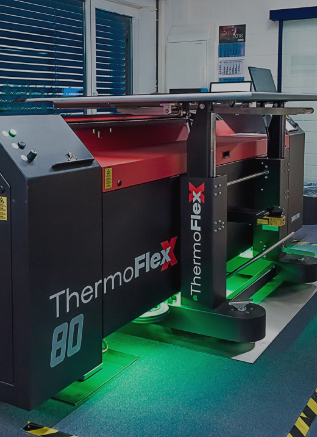
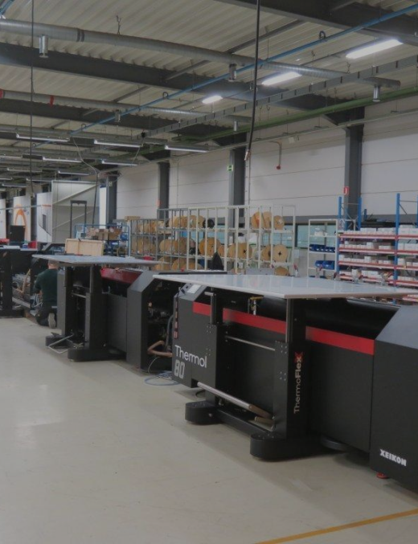
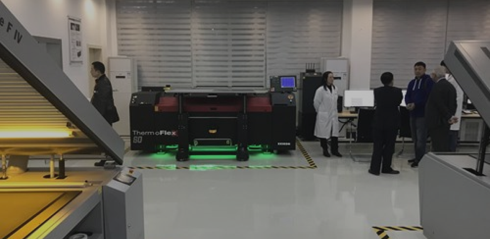

About us
Open Technology Open MindYou tell technology what to do, not vice versa
For the flexographic market Xeikon Prepress offers digital platemaking systems under the ThermoFlexX brand name.ThermoFlexX TFxX imagers provide high quality plate imaging including different screening technologies, combined with seamless plate handling and productivity.
All products and solutions are designed with the overarching principles of profitability, quality, flexibility and sustainability in mind. With these guiding principles and a deep, intimate knowledge of its customers, Xeikon Prepress continues to be one of the industry’s leading innovators of products and solutions.
Thermoflexx SolutionsMeet The Printers’ Demands
Customer Awareness
Xeikon prides itself on the close relationships it has built with its customers. All the solutions offered by the company are developed to solve specific customer challenges. The company maintains its “customer awareness” by being open and approachable at all the levels of the organization.
Experience
Printers and prepress tradeshops can depend on Xeikon Prepress for experience and know-how. As a renowned innovator in the printing industry for more than 20 years, the company has been offering CtP solutions for the Newspaper, Commercial & Screenprinting Industry.
High Quality, Modular And Open SolutionsFor Flexo & Letterpress Plates
-
Choice Of Plates
Printers and repro houses can use their ThermoFlexX imagers to expose any of the leading flexo and letterpress plates. The choice is theirs, since they don’t have to be locked into a ‘closed system solution’. With ThermoFlexX, they have complete freedom of choice.
-
Professional Quality
One of the key benefits of the ThermoFlexX imagers is their 5080ppi imaging resolution for flexible packaging jobs, on top of that they now also offer 10.160 dpi for security printing. In addition, ThermoFlexX customers swear by the manufacturing quality and reliability of Xeikon Prepress.
-
Professional Support
In a production environment, any solution is only as good as the service support behind it. In case of ThermoFlexX solutions, the installation and support teams are always available to help customers, together with the experts from local distribution partners.
-
Openness And Modularity
ThermoFlexX imagers accept 1-bit TIFF files from any workflow or front-end. And the workflow can be as simple or as complex as the printer or repro house needs.